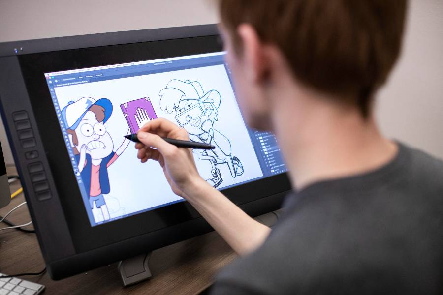
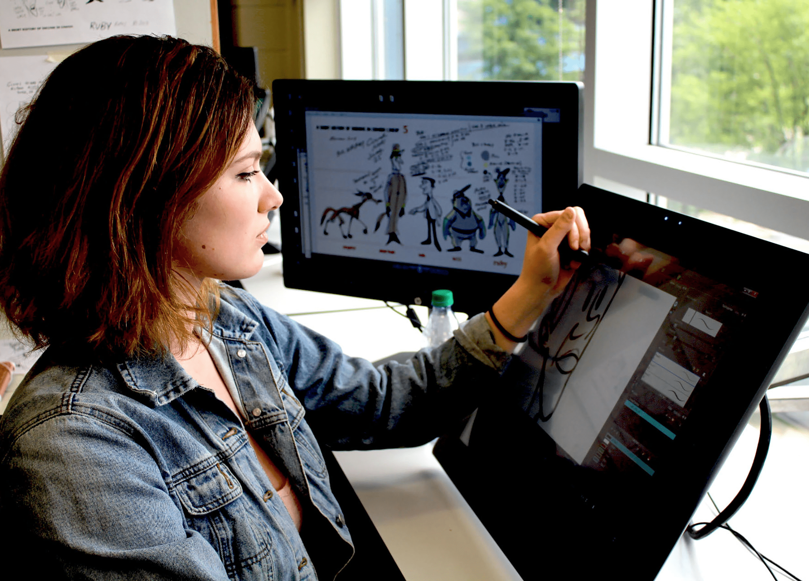

Animation

Borough of Manhattan Community College
Animation and Motion Graphics
Associates Degree A.S.
The Animation and Motion Graphics program provides students with the fundamentals of two- and three-dimensional (2D and 3D) animation, motion graphics, and special effects for advertising campaigns, video games, movies, and television.

Kingsborough Community College
Animation
Associates Degree A.S.
The Art Department at Kingsborough Community College is dedicated to providing a comprehensive program of study in the visual arts, designed to prepare students of diverse life experience for either continued baccalaureate study or immediate entry into a range of visual art professions.